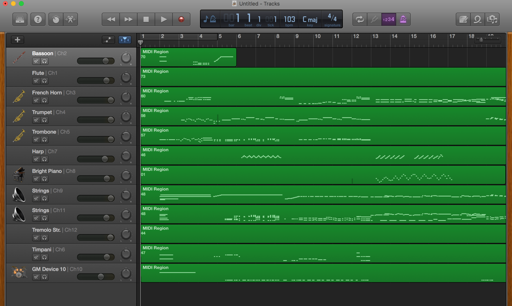
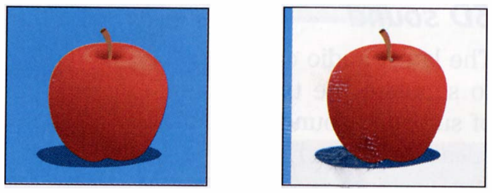
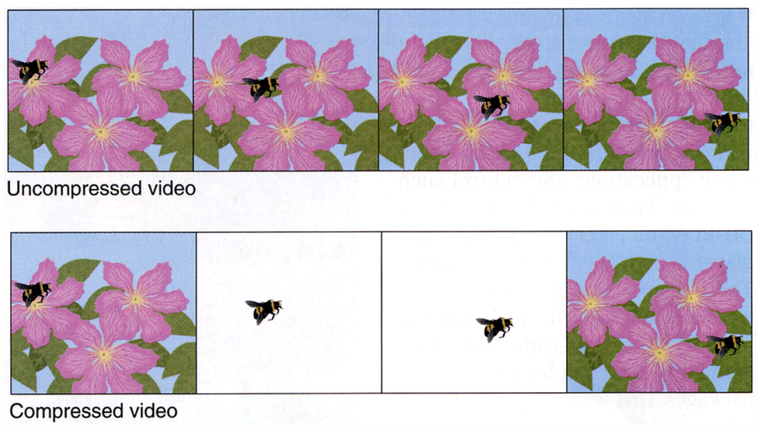

Multimedia
by Spencer Tiberi
Introduction
- Odds are you use it everyday, but what is it?
音频
- Computers are good 在 recording, playing 返回, and generating 音频
- Uses different file formats
- File formats are just a way of storing 0s and 1s on disk so that certain software knows how to interpret it
- MIDI
- Way of storing musical 笔记 for certain 歌曲
- Can do this for different instruments
- Programs can render the 笔记 for these instruments
- GarageBand
- Included with macOS

- 这是 the Star Wars theme in MIDI
- Doesn’t sound quite as good as the actual version
- Computer synthesizes the 笔记
- Not an actual recording
- Computer interprets 笔记 in the MIDI file
- MIDI is common in the digital workspace among musicians who wish to share music with each other.
- Humans typically like to hear music preformed and recorded by humans
- File formats for recorded music include:
- AAC
- MIDI
- MP3
- WAV
- File formats for recorded music include:
- WAV is an early sound format, but still used
- Uncompressed data storage allowing high quality
- MP3
- File format for 音频 that uses compression
- Significantly reduce how many bits are necessary to store a song
- Discards 0s and 1s that humans can’t necessarily hear
- True audiophiles 五月 disagree
- Trade off between optimizing storage space and sacrificing quality
- This compression is said to be lossy
- Losing the quality in the compression process
- File format for 音频 that uses compression
- AAC
- Similar to MP3
- 五月 see when you 下载 a song from iTunes
- Streaming services such as Spotify don’t transfer a file to you but rather stream bits of information to you
- How do we think 关于 the quality of these formats?
- Sampling frequency
- Number of times per seconds we take a digital snapshot of what a person would hear
- Bit depth
- Number of bits used for these individual snapshots
- Sampling frequency x bit depth = number of bits necessary to store one second of music
- 音频 file formats allow you to modify what these parameters are
- Sampling frequency
Graphics
- A graphic, what we see with multimedia, is really just a bunch of pixels both horizontal and vertical
- All file formats are rectangular in nature, though transparent pixels can make images look to take on other shapes
-
In the simplest form, each of the dots or pixels is a bunch of 0s and 1s
- To create a file format, we just need to determine a mapping
- This image is only black and white, so how to represent color?
RGB
- RGB stands for Red Green Blue
- With information giving an amount of red, an amount of green, and an amount of blue, you can tell a computer how to colorize pixels
- None of the colors yields a black pixel
- All of the colors yields a white pixel
- In between these two options is where we get all sorts of colors
- Consider the three bytes: 11111111 00000000 00000000
- If we interpret these bytes to represent colors, it appears we want all of the red, none of the green, and none of the blue
- These 24 bits (3 bytes = 3 x 8 bits = 24 bits) represent the color we know as red!
- If a computer wanted to represent this color, it would store these 24 bits
- Consider the three bytes: 00000000 11111111 00000000
- Green
- Consider the three bytes: 00000000 0000000 11111111
- Blue
- Consider the three bytes: 00000000 0000000 0000000
- Black
- Consider the three bytes: 11111111 11111111 11111111
- White
- Can get many color variations by mixing the above colors in different quantities
- When we talk 关于 image formats, we typically don’t talk in terms of binary but rather something called hexadecimal (base-16, contains 16 digits)
- 0, 1, 2, 3, 4, 5, 6, 7, 8, 9, a, b, C, d, e, f
- 0 is the smallest number we can represent in single digit
- f is the largest number (value of 15) we can represent in a single digit
- Consider the 8 bits: 1111 1111
- Each hexadecimal digit represents four bits
- One hexadecimal digit can represent the first four bits, another can represent the second four
- Represent something with eight symbols using only two!
- 1111 is the decimal number 15, which is f
- Therefore, 1111 1111 in hexadecimal is ff
- Red can thus be represented in hexadecimal as ff 00 00
- Green can be represented in hexadecimal as 00 ff 00
- Blue can be represented in hexadecimal as 00 00 ff
- A lot of graphical editing software such as Photoshop use hexadecimal to represent colors
Bitmap Format
- This 背景 for Windows XP was a bitmap file (.bmp)
- A mapping or grid of bits much like the smiley face from before
-
Zooming in on this image show that it is just a grid of dots
- Notice the pixelation
- Much like with 音频, so too in the 世界 of images do you have discretion over how many bits to use
- How many bits to represent each pixel’s color?
- Resolution is another factor
- An image that is only 100 pixels scaled up only duplicates the existing limited information, resulting in a blotchy image
- Would be better to 开始 with image that has a higher resolution (更多 pixels)
- A lot of repeated colors, so it seems silly to represent each color with the same number of bits
Image Compression
- Graphical file formats can often be compressed
- Can be done lossy or losslessly
- With 音频, we threw away 音频 information that the human ear can’t necessarily hear
- 这是 lossy compression; throwing information away
- Using fewer bits to represent the same information is lossless compression
- With 音频, we threw away 音频 information that the human ear can’t necessarily hear
-
Lossless compression

- There is a lot of repeated blue in the first image
- Using the same 24 bits to represent each pixel!
- The second image is compressed and not what a user would see
- The first column contains the color that the rest of the row (scan line) should have
- Image contains instructions on how to repeat the color in a particular row
- When a color is encountered that isn’t in the first column (the apple in this case), the instructions would list the colors for each non-repeated pixel
- This uses 较少 bits but makes the original information recoverable
- The first column contains the color that the rest of the row (scan line) should have
-
Lossy compression
- 这是 a .jpg photograph that is somewhat compressed, but not easy to tell
- Let’s say we want to compress this image further so that we can share it without going over a social media platform’s limit
-
It contains 更多 complicated patterns of colors, so let’s try a lossy compression resulting in the following:
- Lossy compression means that I won’t be able to get that original image 返回
- The compression throws away bits of information
- “Does the sky really need this many shades of blue?”
- “Does this leaf really need this many shades of green”
- Replaces bits with only a few colors giving an approximation
- I will not be able to know how clear the sky used to be from this information
- The compression throws away bits of information
Image File Formats
- BMP
- Originally used by Windows
- Not super common these days
- GIF
- Low quality images
- Only supports 8-bit color
- Often used for memes
- Can be animated
-
Like a 视频 file with only a few images
- Low quality images
- JPEG
- Supports 24-bit color
- Losslessly compresses
- Can minimize amount of compression to create high quality photos
- PNG
- High quality graphics
- Supports 24-bit color
- All these formats ultimately have an limited amount of information
- Ultimate just store pixels and colors of when the image was taken
“Enhance”
- Common for popular culture abuses of what it means to be a multimedia format
- “Enhancing” means to make an image as clear as possible not matter what format it was saved in
- David shows a clip of characters “enhancing” an image
- The characters Zoom into a pixelated frame of a 视频 and somehow clear it up to see a reflection
- 视频 is just a whole bunch of images being shown to us quickly (24 frames per second, etc.)
- The pixelated image only contains information for those pixels
- There is no way to obtain a clear image unless the original image was already 在 a high resolution
- The characters Zoom into a pixelated frame of a 视频 and somehow clear it up to see a reflection
- David contrasts this with an aware clip of Futurama
视频 Compression
- You can think of a 视频 format as similar to a flip book
- 视频 formats are just a bunch of images shown quickly in succession to create the illusion of motion
- Not necessarily all information stored as png, jpg, gif, or even images
- 算法 and mathematics can help go from one frame to another
- Opportunities for compression
- Can leverage same image compression techniques for each frame (intra-frame coding)
-
背景 of multiple frames can contain redundant information

- Compare current frame and 下一页 frame of 视频 and determine what has changed
- Store these differences
- Key frames store a snapshot of 时间 to remember what the 视频 looks like
- In each subsequent frame remember what has changed
- Using 算法 and math, 背景 is drawn
- Key frames are stored multiple times to guarantee that frames can be recovered
视频 File Formats
- In the 世界 of 视频, there are 更多 solutions on how to store information
- 视频 file formats are containers
- Containers are digital container in which you can put multiple types of data
- Can include a 视频 track, 音频 track, a secondary 音频 track (for different languages), closed captions, …
- AVI
- Commonly used in Windows
- DivX
- Matroska
- 打开 source container meant to be 更多 versatile
- MP4
- Pretty much universal in all browsers
- QuickTime
- Commonly used in MacOS
- Codecs
- Ways of storing and encoding information
- For 视频:
- H.264
- MPEG-4 Part-2
- …
- For 音频:
- Can be stand alone files or tracks in a container!
- AAC
- MP3
- …
3D 视频
-
Increasingly, 3D formats are becoming 更多 common
- 这是 a 360 degree image of Sanders Theatre
- A spherical image
- Looks distorted in 2D
- Like flattening a globe
- 这是 a 360 degree image of Sanders Theatre
- Images can contain metadata
- Information that viewers can’t see
- Tells programs, applications, and browsers how to display the image
-
With sensors on a headset, users can experience virtual reality
- 更多 file formats are still on the horizon, but ultimately all of them boil down to storing 0s and 1s and why!